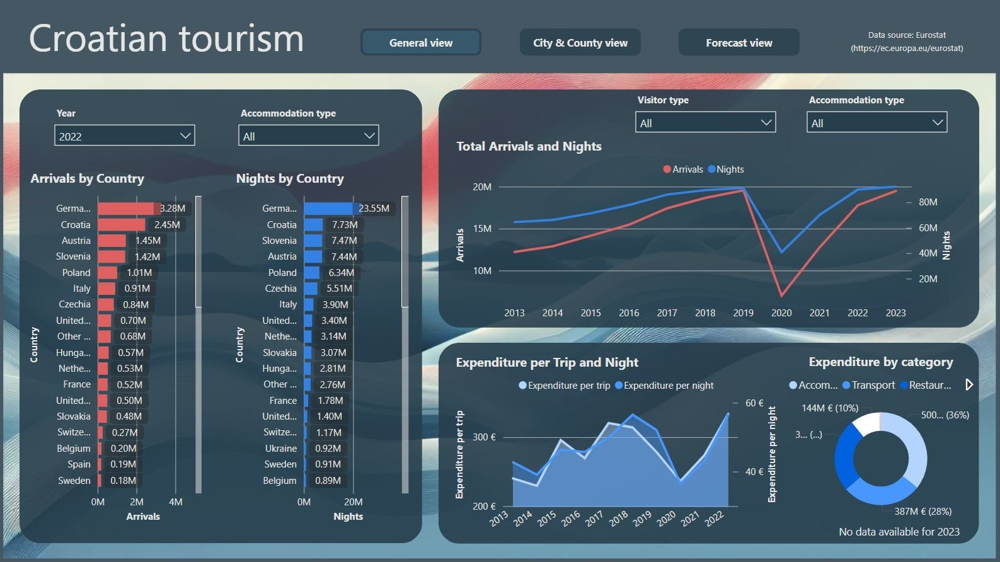
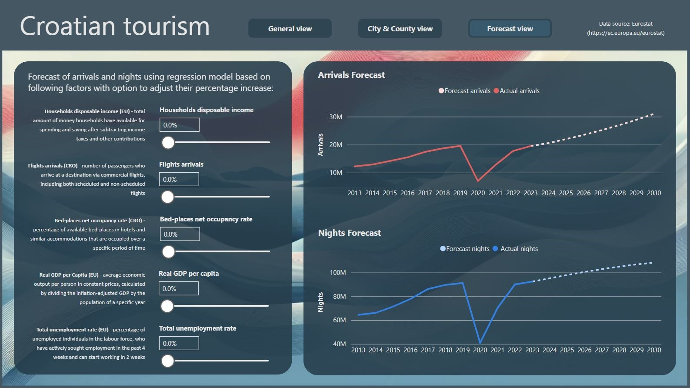
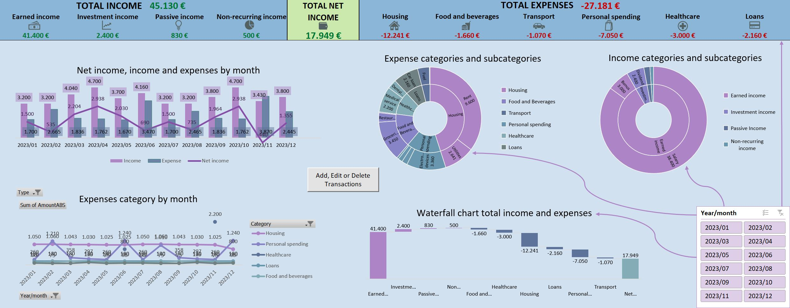

Intro
PROFILE:
Dedicated and goal-oriented Data Analyst with background in banking, finance, logistics and audit. I specialize in translating complex data into actionable insights though data analytics and data visualization. I am proficient in SQL, VS, Power BI, Tableau, Python, Excel and other data and business intelligent tools which I use to create engaging and insightful reports and dashboards. I can help transform your data into your most valuable asset.
SKILLS:
| MS SQL Server | BigQuery | PostgreSQL | VS | Google Analytics | Power BI | Tableau |
| VBA | Python (Pandas, Numpy, Matplotlib, Seaborn, Statsmodels, SciPy) |
| Microsoft Excel | Oracle | SAP | HTML | CSS | .NET | Wordpress | Prevero |
Portfolio
Project 1:
Streaming services guide
Interactive Tableau dashboards that help people decide which Streaming service they should choose based on their preferences.
PROJECT GOALS:
- Help people decide which streaming service they should choose based on their preferences.
- Use Python and Tableau to display my data analytics skills and knowledge.
QUESTION 1:
“Which streaming service should I choose based on my general viewing preferences?”
ANSWER 1:
Streaming Services Data Analysis
Select a streaming service from the list to see how many movies or series they offer, along with related data such as release year, country of origin, genres, review ratings, and parental guidelines. Use this information to decide which streaming service is the best fit for you.

QUESTION 2:
“I want to watch Movies or Series by specific Actor or Director, which streaming service should I choose?”
ANSWER 2:
Search Movies or Series by Actor/Director on Streaming services
Select whether you want to search for movies or series, then choose to search by actor or director. Type their name in the search bar and select from the results. You will see a list of all their movies or series across all streaming services. Select a title to view details such as streaming service availability, country of origin, release year, runtime, genres and other. A graph at the bottom shows which streaming service has the most content from the selected actor or director.

Project Steps:
- Download streaming services data in csv format from Kaggle.com
- Import csv files into Python
- Data cleaning and validation in Python using Pandas and Numpy
- Preliminary EDA in Python using Matplotlib and Seaborn
- Export all merged csv files from Python to excel file using Openpyxl
- Import excel file into Tableau to create two interactive dashboards
- Upload all project related data to GitHub and publish on GitHub Pages
GitHub Repository
Project 2:
Croatian tourism overview
Interactive and informative Power BI dashboards which demonstrate trends in Croatian tourism.
PROJECT GOALS:
- Create comprehensive and engaging Power BI dashboards with all relevant information about Croatian tourism using data from Eurostat and Croatian Bureau of Statistics.
- Use Microsoft Power BI, Power Query and Excel to reveal key insights in Croatian tourism and forecast future trends.
Overview:
General view presents data on visitor arrivals and nights spent, broken down by year and country, with filters for visitor type and accommodation. It also includes insights on expenditure per night, per trip, and by category.

City & County view section highlights the counties with the most visitors and their origins. Visitors distribution map and city breakdown display all Croatian cities by arrivals and nights spent, categorized as domestic or foreign visitors.
Forecast view projects future arrivals and nights spent using a regression model based on key economic factors. Bed-places occupancy, flight arrivals in Croatia and household disposable income, real GDP per capita, total unemployment rate in EU, since most visitors that come to Croatia are EU citizens.

Explore and interact with the dashboards:
Croatian tourism Power BI
Project Steps:
- Download relevant data from Eurostat (https://ec.europa.eu/eurostat/) and Croatian Bureau of Statistics (https://web.dzs.hr/default_e.htm)
- Data validation and cleaning using Power Query
- Data visualization by using Power BI to create interactive dashboards
- Forecast future arrivals and nights spent using Regression model
- Upload all project related data to GitHub and publish on GitHub Pages
GitHub Repository
Project 3:
Business performance report
Dynamic and insightful Power BI dashboards for comprehensive business performance reporting.
PROJECT GOALS:
- Develop interactive and visually engaging Power BI dashboards that provide a full overview of business performance, including sales, products, customer insights, and order activity.
- Utilize Microsoft Power BI and Power Query to make customer segmenation, uncover actionable insights, and create informative visuals to guide strategic decision-making.
Overview:
Sales tab provides a clear view of total revenue, COGS, and gross profit, along with a map highlighting revenue by city. A monthly view allows users to compare key KPIs between the current and previous year.

Customers tab delivers key insights, including average revenue per customer, repeat purchase rate, churn rate, and lifetime value. It also breaks down revenue contribution by age, gender, marital status, loyalty club status, and country, offering a clear view of customer demographics.

Products tab highlights top-selling products by revenue, gross profit, and margin, along with their product ratings. Additional metrics include delivery times and discount usage, offering a more comprehensive view of product performance.

Business performance report also includes following tabs:
- Orders View: detailed list of all orders with key information and numerous filtering options.
- Customer Segmentation: Insights into customer segments based on recency, frequency, and spending. A scatter plot visualizes these metrics to identify target groups for discount offers and marketing materials.
- Sales Forecast: forecast of future revenue and gross profit using Power BI’s built-in regression model.
Each tab provides focused, actionable insights to support data-driven decision-making.
Explore and interact with the dashboards:
Business performance report Power BI
Project Steps:
- Download relevant data from Kaggle (https://www.kaggle.com/datasets/coder846204/store-data)
- Data validation and cleaning using Power Query
- Data visualization by using Power BI to create interactive dashboards
- Upload all project related data to GitHub and publish on GitHub Pages
GitHub Repository
Project 4:
Personal finance tracker
Personal finance tracking solution using Microsoft Excel and VBA for simple and effective financial management.
PROJECT GOALS:
- Develop a comprehensive and user-friendly personal finance dashboard designed for everyday use.
- Use Microsoft Excel, VBA and data validation to create interactive dashboard and user interface.
Overview:
Interactive dashboard provides a comprehensive overview of your financial status, including detailed information on income, expenses, and net income.

Clicking the center button opens a user interface that allows you to add, edit, or delete transactions. Once you close the interface, the rest of the dashboard updates automatically.
In the user interface, you can enter the date either by typing it manually or by selecting it using the calendar button next to the text box.
Download Excel file:
Personal Finance Dashboard (with sample data)
Personal Finance Dashboard (without sample data)
Project Steps:
- Create transactions entry and calendar userforms using VBA
- Data validation and data entry to ensure transactions input accuracy
- Data visualization by using Microsoft Excel to create interactive dashboards
- Upload all project related data to GitHub and publish on GitHub Pages
GitHub Repository
Contact
LinkedIn Github